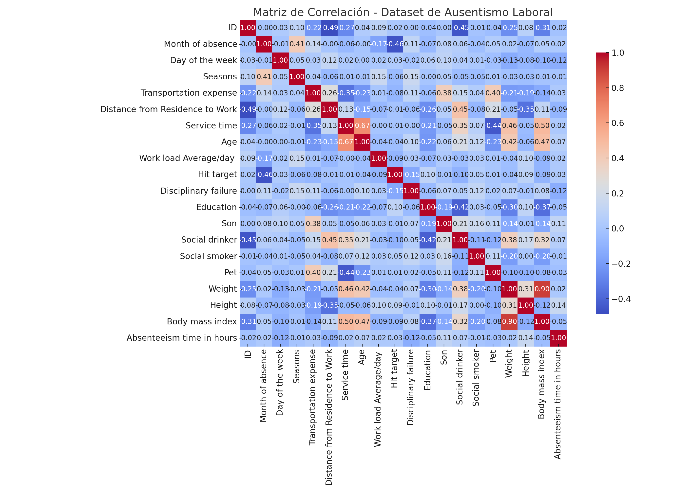

ACT2 PEC2
Análisis de Correlación: Ausentismo Laboral
Fuente del dataset: UCI Machine Learning Repository
Descripción
Este análisis visualiza la matriz de correlación entre las variables numéricas del dataset de ausentismo laboral.
La correlación identifica relaciones lineales que pueden ayudar a entender los factores que afectan al ausentismo.
Hallazgos principales
- IMC: Se correlaciona positivamente con el peso y negativamente con la altura.
- Edad y servicio: Existe una fuerte correlación entre la edad y los años de servicio.
- Ausentismo: No presenta correlaciones lineales fuertes con otras variables.
- Transporte y distancia: Correlación moderada, como se esperaba.
Visualización
